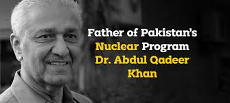

Abdul Qadeer Khan known as A. Q. Khan, was a Pakistani nuclear
physicist and metallurgical engineer who is colloquially known as the "father of Pakistan's atomic
weapons program".
1952Khan was educated in the metallurgical engineering departments of Western European
technical universities
1972Khan joined the Physics Dynamics Research Laboratory (or in Dutch: FDO), an
engineering firm subsidiary of Verenigde Machinefabrieken (VMF) based in Amsterdam, from Brabers's
recommendation.
1974Khan wanted to contribute to efforts to build an atomic bomb and met with officials at
the Pakistani Embassy in The Hague
1976Khan joined the atomic bomb program and became part of the enrichment division
2001Khan served as an adviser on science and technology in the Musharraf
administration and had become a public figure who enjoyed much support from his country's political
conservative sphere
2021Khan was admitted to Khan Research Laboratories Hospital after testing
positive for COVID-19. Khan died on 10 October 2021, at the age of 85, after being transferred to a
hospital in Islamabad with lung problems.He was given a state funeral at the Faisal Mosque before
being buried at the H-8 graveyard in Islamabad